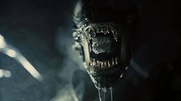
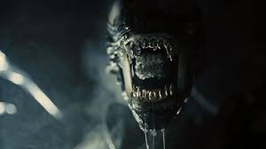
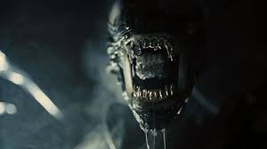
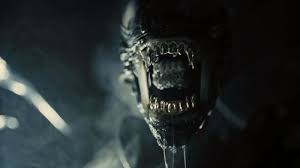

 

Los Alien o Xenomorfo (llamado a veces incorrectamente Xenomorfe), es un ente biológico extraterrestre parasitoide ficticio, antagónico de la tetralogía fílmica de la serie Alien y sus precuelas, con apariciones en secuelas en cómics y videojuegos además de los crossover Alien vs Depredador, suelen medir mas de 2,10 m y pesar 175 kg y 200 kg